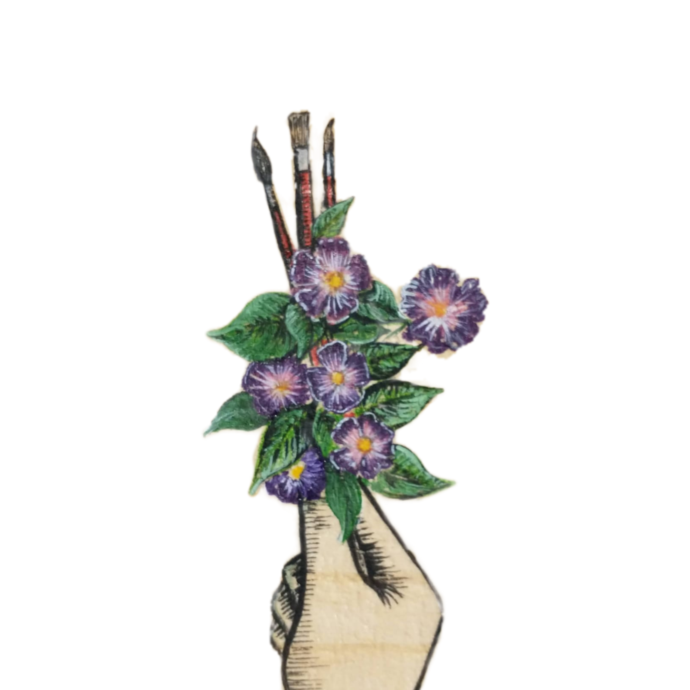

Nossa história
A história da Casa Ateliê teve seu início no Dia das mães do ano de 2020 quando um amigo da família da idealizadora da Casa Ateliê surgiu com a proposta de pintar uma caneca de porcelana para presentear sua mãe, mesmo pensando em exitar por não possuir tinta própria para esse tipo de pintura, a pintura foi feita com tinta acrílica. Foi após transformar essa ideia em arte e mostrar para a família, que incentivou a investir em um negócio do ramo de presentes, que a Casa Ateliê surgiu.
Após desenvolver o nome e dar uma identidade a empresa, a idealizadora do projeto buscou no artesanal, no criar com as próprias mãos juntamente ao aconchego de casa o objetivo do empreendimento. Utilizando de uma página do Instagram já existente de pinturas da artista, foram divulgadas as canecas. De início as canecas eram pintadas utilizando tinta acrílica e depois foram utilizadas canetas específicas que a artista ganhou de sua irmã, a família sempre foi a base para sustentar o desenvolvimento da Casa Ateliê.
O dia dos namorados chegou e a empreendedora trouxe, a partir de ideias da internet, produtos para essa data comemorativa, tudo com muito carinho desde a embalagem ao produto. E o dia dos namorados foi um grande sucesso, após isso outras pessoas procuram os serviços da Casa Ateliê, buscavam telas, pinturas em paredes e painéis em madeira. A Casa Ateliê foi crescendo, expandindo os seus horizontes, as pessoas foram ficando fascinadas com a ideia e os produtos, e houveram encomendas até fora do Estado. A Casa Ateliê tem como principal objetivo transformar ideias em arte, trazer de forma familiar e de maneira afetuosa a arte para vida das pessoas.
Nossa Localização
Nosso estabelecimento está localizado no coração da cidade de Aquiraz-CE. Localização para retirada agendada.
Nossa Fundadora
FÁTIMA GOMES-Desenhista, pintora e arte- educadora. Licenciada em artes visuais pelo Instituto Federal do Ceará – IFCE. Grande parte de minha inspiração vem de experiências pessoais, do ambiente em que vivo e do meu mundo imaginário. Meus trabalhos mostram desenhos e pinturas que retratam a maneira pelas quais as mulheres são percebidas na sociedade contemporânea.
Últimas participações em exposições:
Um lugar espelhado na arte – 2021 Galeria – Benficart
Mostra 8 de maio – 2021 – Centro cultural do BNB – Fórum de artistas visuais do Ceará
8 de maio diCasa – 2020 – Virtual no Instagram do Fórum de artistas visuais do Ceará